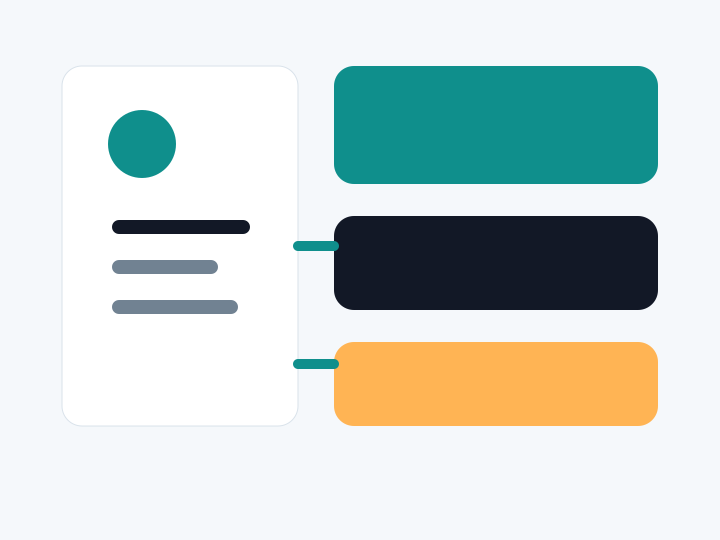

WooCommerce
Specialty retailer checkout redesign
Improved product navigation, simplified checkout decisions, and added conversion tracking for revenue reporting.
Our work
WooCommerce
Improved product navigation, simplified checkout decisions, and added conversion tracking for revenue reporting.
B2B services
Reworked service architecture, proof sections, resource strategy, and quote paths.

Automation
Connected contact forms, chatbot content, support categories, and internal notifications.